Villainous Empire is a four part saga that is about corruption of laws, rulers, and religion that occurs
in the country of Hestia. Three Empires Hotaru, Adelaide and Basileus are currently in a civil war. The reason is
to control of laws, land, and religion. One wants peace, one wants destruction, and one wants power.
The year takes place around 380 ADE. There is no magic involve.
This Project is being worked on.
Part 1: The Beginning: Amelia Side - This saga is about Amelia begging her father to find her brother, but he
makes some attempts to find his own son, but no results. Amelia later breaks out of her own castle
just to find her own brother but the attempts failed. One of failed attempts she meets a girl in
the same age as her. As the saga goes on, she becomes more aggressive, more selfish, and more emotional, because
she is often gets abused by her trainer and her father, and neglected by her father and mother.
Part 2: The Beginning: Merlinus Side - This saga is about Merlinus woke up in an abandoned fort. There
he was discovered by a raiders in ragged clothing. Some with decayed armour. They look really creepy
and was about to do horrible things to him. But he was saved by a middle-age man name
Althelbeorn Ryokou. Althelbeorn tells Merlinus that he is at Fort Shimoda. Althelbeorn later takes
him in to his house. His house is in the east of the abandoned Fort Shimoda. He introduced Merlinus to:
Althea, his wife; Herminius, his adopted son; and Ulfa, his adopted daughter.
Merlinus is shown with love and compassion by Althelbeorn.
Part 3: A New Ruler and the Fall - This event takes place Nine to Ten Years after
"The Beginning" Saga. Amelia and Emil reunited. Unfortunately, Amelia does not know who Merlinus is. She uses her
as a loyal servant without knowing that it was her own twin brother the entire time.
Herminius and Ulfa now works for the Adelaide Empire as Scouts to watch over the Hotaru Empire.
Merlinus as a servant does anything to protect his twin sister. Even if it means turning "Evil".
One day, Merlinus was walking around the Adelaide Empire to do shopping for him and his foster
brother and sister, but he bumps into a girl and all of his food drop to the floor along with himself. He meets a former
classmate, Sophia Kyoko. She is the current princess of the Adelaide Empire. Sophia is very delight to see Merlinus and
gives him a hug. She was with another person Arthur Basileus and he has a crush on Sophia. He cause a force marriage to Sophia.
Sophia does not appreciated cause she knew that he is getting married to Amelia. This also enrages Amelia because of her Jelousy.
Because of the Jelousy, she attack the Adelaide Empire recklessly just to kill Sophia. The Mission is a sucesses.
The death of Sophia Kyoko causes Adelaide to call for war on the Hotaru Empire with the alliance of the Basileus Empire.
Herminius and Ulfa are the Commanders of the army. They are with Arthur Basileus. He was wearing a mask so he can stay hidden
from the Hotaru Empire. Herminius and his sister call all the shots. Attack the country with many losses. Till they reach to the
Capital of Hotaru.
Herminius and Ulfa were the first people that made it in the Main Castle. They went to the Castle Chamber. They see Amelia, sitting
a throne with the right hand on her right side of the face. Her right hand was in a shape of a fist. Her left hand was on her side torso
holding a sword. The face expression is like a evil grin. They talk for a bit and they battle. The fight goes on. Amelia can fight
on her own. But Herminius can see the throught what is really going on. Amelia got knockout by Herminius and Ulfa combine and was arrested
and ended up in the Castle Prison. She is about to be executed by Herminius. However, Herminius hesitated. He could not do it. Arthur however,
realized what was going on and activated the guillotine. She is publicly executed at 3pm in the City Square by a guillotine.
The audience cheers at her execution. Ulfa also cheers on. Herminius is shock. Everyone left except for Herminius and Arthur.
Arthur tells him, what are you going to do now that he's gone? He laughs and walks away. Herminius drop to his knees emotionless.
During the night, Ulfa was at a bar hanging out with the citizens in the celebration. Harmonia Aiko recognized who Ulfa was. She told ulfa
where is Herminius. Ulfa did not realized where he is. Ulfa left the bar immediately and find her brother. She see him still on his knees,
emotionless. Ulfa ask why is he there still. Herminius ask her where is Merlinus. Ulfa just now realized where is Merlinus. Herminius
tells her that he is dead. At the guillotine. He tells her that he has a twin sister, Queen Amelia Cruella. Amelia just realized that Merlinus
is her twin brother Emil, she starts crying, wears Merlinus's outfit and flees. He did this just to protect
his own sister. Ulfa cries nonstop. She was very sad about his death. No citizens were around. They brought his body and buried it in Rularia,
a village in Adelaide Empire. After that, they went on a new journey to find Amelia.
Part 4: Regret - After a death of her dearest brother, she wonder around the country of Hotaru.
She kept on hiding from everyone. She somehow was able to buy food cause she is still in Merlinus's Outfit. It's only because Merlinus
left her a good amount of money for her. With a broken heart, she is constantly crying. She walks to a beach.
This section's main plot is still being worked on.
Title Card
Current Version
This is the final version of the vol.1 title card. This is image is meant to show
of how Amelia (left) and Merlinus (right) missed each other as kids. This also show that
both of them live in two different lives.
This design is heavily inspired by Japanese anime style with the combination of Gothic
Architecture and manuscripts.
Finished in September 25, 2018
Sketch
This is the sketch of this version. It started out as a sketch before I did
the digital art.
Finished on: August 18, 2018
Version 1
This is the first version of vol.1 title card.
This time, Amelia and Merlinus are holding hands instead of touching each others hands.
This image was inspired by Gothic Architecture.
Finished on: June 24, 2017
Sketch
This is the sketch of version 1. Difference between the digital art and this sketch is the
rose window.
Finished on: September 1, 2016
Icon Design
Current Version
Final Design of the Logo.
This icon design is heavely based on Gothic Manuscripts.
Finished on: October 7, 2018
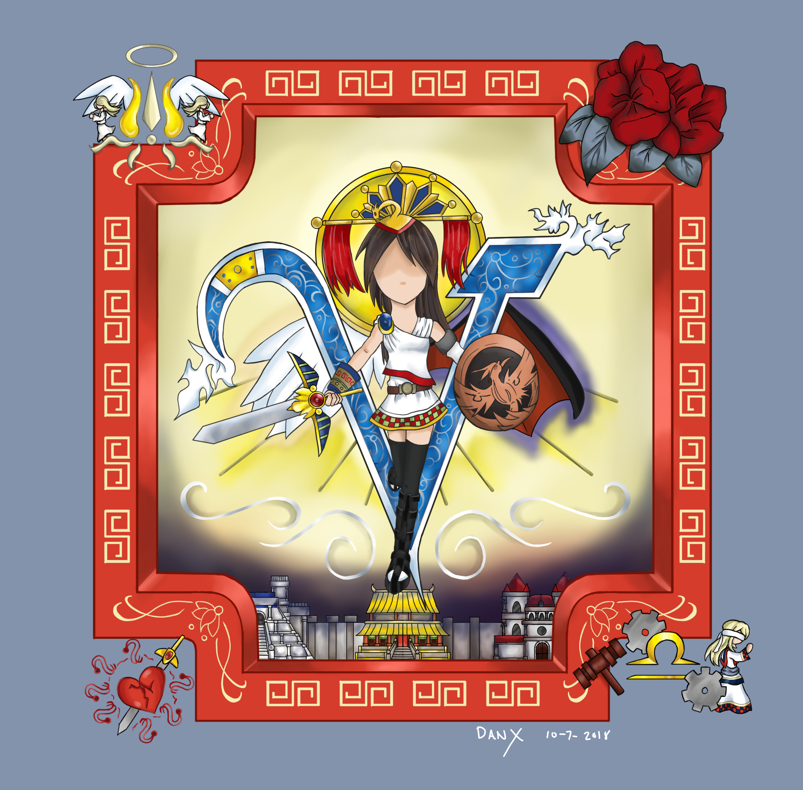
Blueprint Sketch
Blueprint and sketch of the Logo.
Each of the four items on each corner represents something.
The top left represents: "Corruption of Religion". This is the icon for Hasial's Religion.
The top right is model after a deadly flower "Wolfbane". Which represents "death" without using
the iconic skulls.
The bottom left is a sword stabbing through the heart. It represents "false hope".
The bottom right is a horoscope of libra. Among it is a gavel and a victum. This represents
corrupted judgement. The gears among the libra represents disconnection.
Finished on: 2017
Version 1 Sketch
Sketch for the logo design.
Again, this sketch was going more toward the Gothic Manuscripts.
Finished on: 2017
Version 1 - Logo
First version of the Logo.
This was a mix of Gothic Manuscripts and Asia Icon shape.
The building was modeled after Gothic Architecture, Notra Dame.
Finished on: October 2017
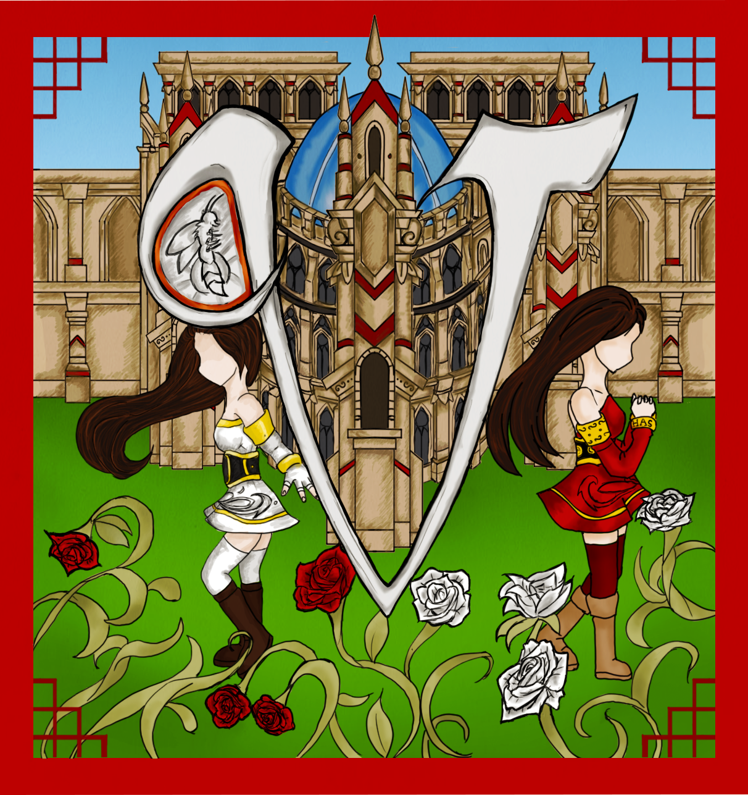
Adelaide Logo
This is the Adelaide Logo. This represents royality.
The lion is well known as the king of all animals and royalty.
Finished on: November 19, 2018
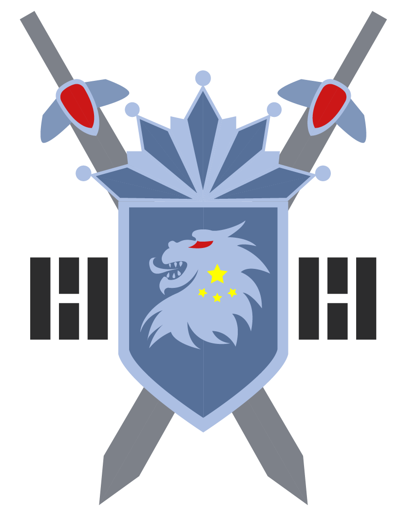
Basileus Logo
This is the Basileus Logo.
They are well known for obeying the laws of Hestia. Laws above all else.
This is an abstract version of a libra and a crown merge together.
Finished on: June 2017
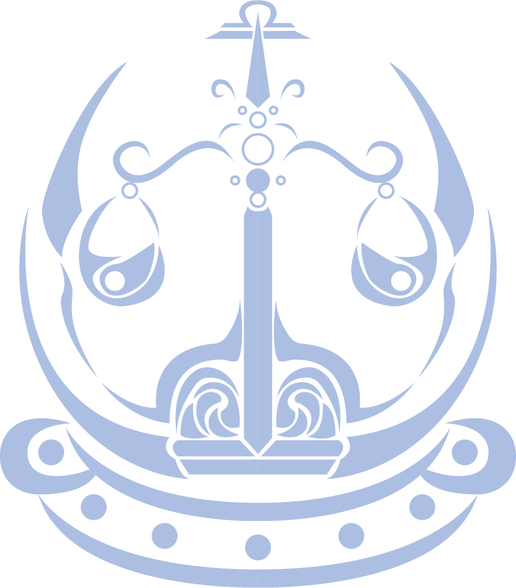
Hotaru Logo
This is the logo for the Hotaru Empire.
Is resembles to an abstract firefly.
The firefly represents the expansion of the evil light.
Finished on: June 2017
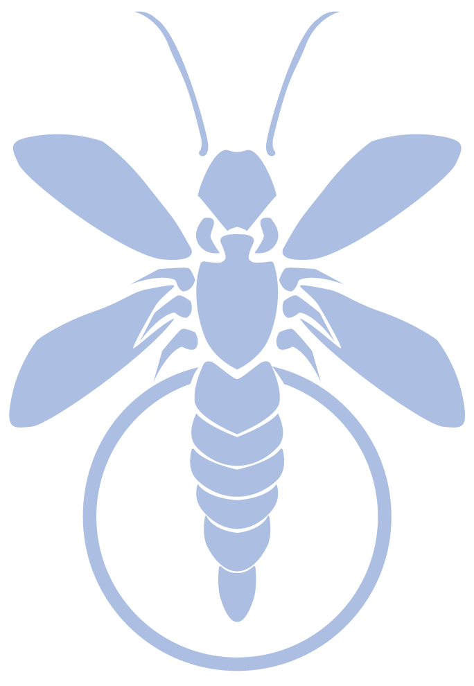
Sketch - Hotaru Logo
Sketches of the Hotaru Logo.
Finished on: October 2017
Sketch - Adelaide Logo
Sketches for the Adelaide Logo.
Finished on: October 2017
Character Design
Main Characters
Amelia Cruella
Amelia Cruella is one of the four main characters in this saga. She is also known as the "Queen of Evil."
Unlike the other three main characters, she grow up to be more to be evil, selfish, spoiled, and cowardice.
As a child, she used to hang out with her twin brother Emil. Unfortunately, her brother has been kidnapped by raiders.
They were ambushed at Lux Forest. All the guards were killed, along kidnapping a maid. Amelia was mistaken as a boy and did
not get kidnapped. The Hotaru Soldiers arrived just after the mysterious girl leaves. Running towards Amelia is a group of
soldiers and the lead strategist, Lanka Sage.
As a kid, Amelia is a very gullible kid. Because of that, she was easily manipulate by her father. Willing to believe him on anything.
She was also poorly educated, very sheltered, and spoiled. She is often ignored by her parents. Her father and mother always give her
whatever she want just to have her to go away. Only two people that show her love is her Head Maid, Aiko Harmonia and
the Prince of Basileus Kingdom, Arthur Basileus.
In "A New Ruler and the Fall", as the current Queen of Hotaru, she was not properly trained to handle politics due to poor education of her parents.
So she abuses the power for herself. These decision will cause her to regret the worst decision she makes.
She is still being develope.
Current Version
This is Amelia Cruella at the age of Eighteen in her default Queen Outfit.
The inspiration of Amelia is from "Riliane Lucifen d'Autriche"
as "Kagamine Rin" in a song "Daughter of Evil" by Akuno Mothy_P.
She is also the very first character I design in this series.
Finished on: March 9, 2018
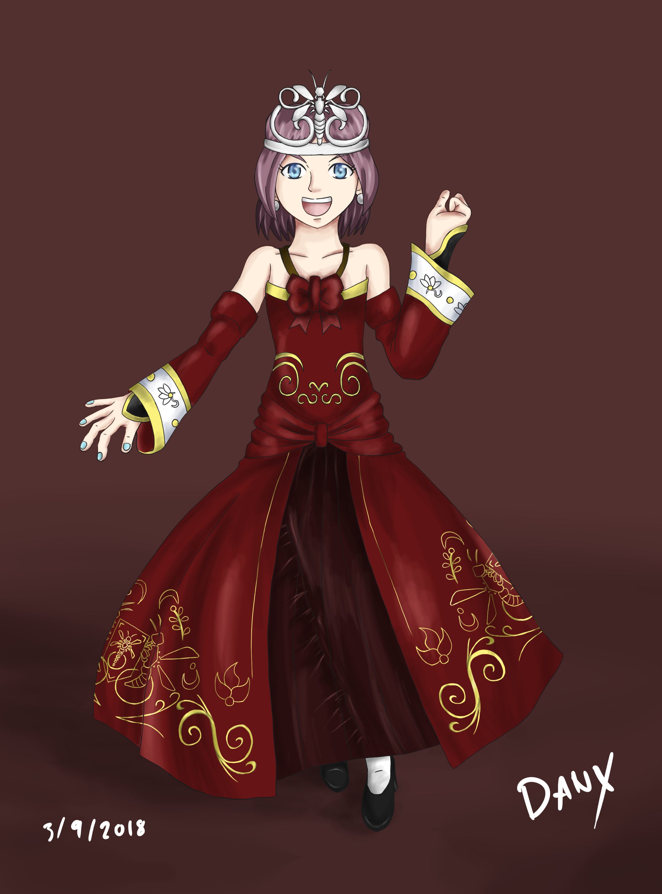
Version 1
This is the very first version of Amelia
This very first approch was to make it look like a simplified, and moderan vicorian style.
Skirt was made shorter intentally just to explore different styles.
Finished on: 2016
Version 2
This is the second version of Amelia
This was going more toward of moderan royal outfits.
Finished on: 2016
Version 3
This is the third version of Amelia
This version was going for more clean plain dress with basic shapes.
Finished on: April 14, 2016
Version 4
This is the forth version of Amelia.
This was added with complex line shapes.
Finished on: April 15, 2016
Version 5
This is the fifth version of Amelia.
This outfit was meant for the very end of the 4th saga, Regret.
This was modeled after version 4.
Finished on: 2016
Version 6
This is the sixth version of Amelia.
This version was going more towards simplified victorian dress.
This was also modeled after one of my ealier works named "Queen of Evil".
This is also the only version that has a color pallet.
All of the inspiration is related to the current version.
Finished on: 2016
Character Sheet - Queen of Evil
This is the Character Sheet of Amelia.
All direction in all angles.
Finished on: 2016
Old Style Adeladian Outfit - Version 1
Using version 4 Amelia. This is her Adeladian Outfit.
This was givin by a nun named Beatrice Chayna.
The Adeladian Outfit is inspired by Japanese Kimono.
Finished on: 2016
Old Style Adeladian Outfit - Version 2
Using version 7 Amelia. This is her Adeladian Outfit.
This was givin by a nun named Beatrice Chayna.
The Adeladian Outfit is inspired by Japanese Kimono.
Finished on: 2016
Character Sheet - Regret
This is the Character Sheet of Amelia.
Finished on: 2016
Regret Outfit - Version 1
Amelia wearing her twin brother's outfit. Fortunatly, people surrounding her do not know that
she is still alive. She is posing as her brother Emil (or Merlinus).
Finished on: 2016
Regret Outfit - Version 2
Amelia wearing her twin brother's outfit. Fortunatly, people surrounding her do not know that
she is still alive. She is posing as her brother Emil (or Merlinus).
Finished on: 2016
Kid Amelia Cruella
Sketch of Kid Amelia Version 1.
The Development started with the Amelia as an teen before I started develope the kid
version of Amelia.
This version started out as an expoloration of what kind of outfits I want for Princess Amelia.
Started in: 2016
Database
Sketch of Kid Amelia Version 1 Database.
These are two different version of the one with the tiara and without the tiara at the
left side of this image.
She is modeled after her 18 year old self.
Finished on: 2016
Kid Amelia - Version 2
Sketch of Kid Amelia Version 2.
She is still modeled after her 18 year old self.
This outfit is more of a moderan take of a simplified Victorian Dress.
Finished on: 2016
Merlinus Daimhin
Merlinus Daimhin is one of the four main characters in the series. He is extremely loyal to his family and to his sister,
Amelia. He hides his real name "Emil" because he will die by his own people in both Adelaide and Hotaru Empire. If Adelaide knows
that he is the "Prince of Hotaru" (he is also Ameila's Twin Sister), they would kidnapped him and abuse that power from Hotaru to get what they want, and then kill him
(or so they thought). The Hotaru Empire have their own motive of killing him and that is his intelligents. Due to the fact his
life that he lived in a well raised area, and well educated, he is extremely difficult to manipulate.
During the end of the first two sagas "The Beginning: Part 1 and 2" and the beginning of a third saga, "A New Ruler and the Fall",
Merlinus reunites with Amelia. Unfortunately, Amelia does not remember
him. Nether did his biological father, Attila remembers. Only two people in the whole Hotaru Empire remembers him.
Harmonia Aiko, the head maid, and Cindra Kynthos, Attila's right hand person.
Current Version
Merlinus as a Hotaru Servant.
His inspiration is from "Allen Avadonia" as "Kagamine Len" in a song called "Servant of Evil" by Akuno Mothy_P.
He is also the second character I design in this whole series.
Finished on: August 2, 2018
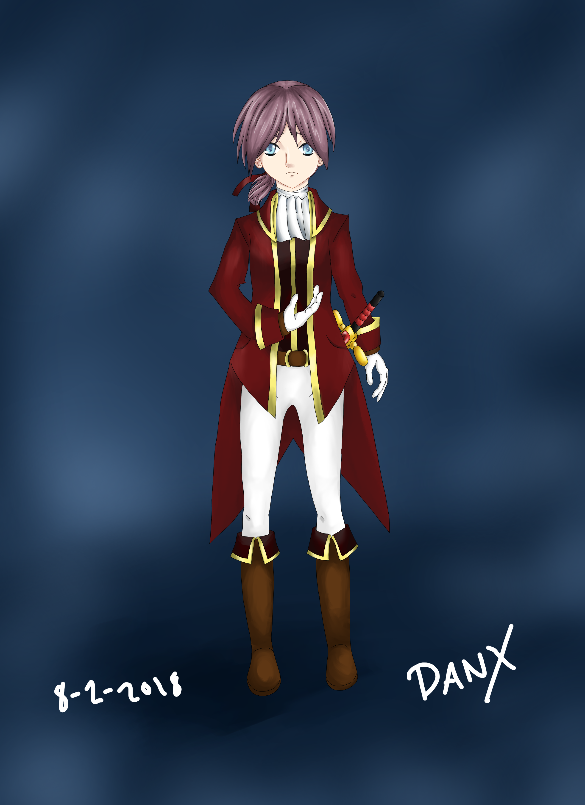
Version 1
Merlinus as a Hotaru Servant. He is also 18 years old.
To not repeat myself, all of versions below were more towards like a moderan servant in a past timeline.
Finished on: 2016
Version 2
Version 2 Sketch of Merlinus.
Finished on: 2016
Version 3
Version 3 Sketch of Merlinus.
Originally, I wanted him to use a dagger known as the Demascus. However, the dagger
does not fit his character style as that he is a known strategist swordsman out of his
foster siblings, Herminius and Ulfa Rue.
Finished on: 2016
Version 4
Version 4 Sketch of Merlinus.
This version is just Merlinus wearing a jacket. He is also holding a suitcase.
The suitcase seems off for the Time Era I placed in.
Finished on: 2016
Version 5
Version 5 Sketch of Merlinus.
This version seems a bit kid like.
Finished on: 2016
Version 6
This is the final version of Merlinus.
This version makes him look more professional.
A Servant who is very loyal to Queen Amelia Cruella, his biological twin sister.
Finished on: 2016
Queen Amelia Outfit V1
Sketch of Merlinus. Posed as Amelia Cruella.
This version was based on version 3.
During "A New Ruler and the Fall", Merlinus dressed up as Amelia to protect her. He sacrifice
his own life to fight off against the resistance. The reason this exist because Amelia attack a
small town in Adelaide Empire.
Finished on: 2016
Queen Amelia Outfit V2
Current version of Merlinus. Posed as Amelia Cruella.
This is the exact version of the current version of Amelia Cruella. Just as Merlinus.
Finished on: 2016
Database
Sketch of Merlinus as a kid version 1
This is an exploration of how kid Merlinus would look like.
Finished on: 2016
Training Uniform
Sketch of Merlinus as a kid in Swordsman Training Outfit.
The design of this training outfit purposly does not look like any outfit in Hestia. These clothes are only avalible
outside of Hestia, country of the Three Empires: Hotaru, Adelaide, and Basileus.
Finished on: 2016
Database - Training
Swordsman Database.
Same explation above.
Finished on: 2016
Database - Hotaru Outfit
Database of his Hotaru Outfit.
This outfit is how he was found when he encounters Althelbeorn for the first time.
This design is more towards of his teen self's outfit.
Finished on: 2018
Adeladian School Uniform
Sketch of Merlinus as a kid in Adelaide School Uniform.
This outfit is based on Chinese Robe and Japanese Kimono.
Finished on: 2016
Database - Adelaide School Uniform.
Same explanation above
Finished on: 2016
Herminius Rue
Herminius Rue is born in another Country with his sister Ulfa. Their family were killed by raiders who sell
people for slavery. He was three-years-old at that time. He killed the raiders and ran off with his sister.
He fought for survival for himself and his sister. One harsh bizzard day, he is struggling to move while making
sure his sister is warm. He faints.
He woke up inside of a medical room in the Military Base. He saw his sister next to him on the same bed. He hears
a voice of a man in his 30s. He took him in his lift to take good care or them. He was named Althelbeorn Kaigai Ryokou.
When he was six-years-old another person came to his life to be a part of his family. He introduced himself as
Merlinus Daimhin. Herminuis and his sister were carefree people. They show him around the house, share toys, books and
comics. All of them went to the same school in the Adelaide Empire.
Current Version
Herminius in Armour givin by his aunt Maia.
He is inspiration of "Germaine Avadonia" as "Meiko" in a song "Servant of Evil" by Akuno Mothy_P.
Finished on: 2017
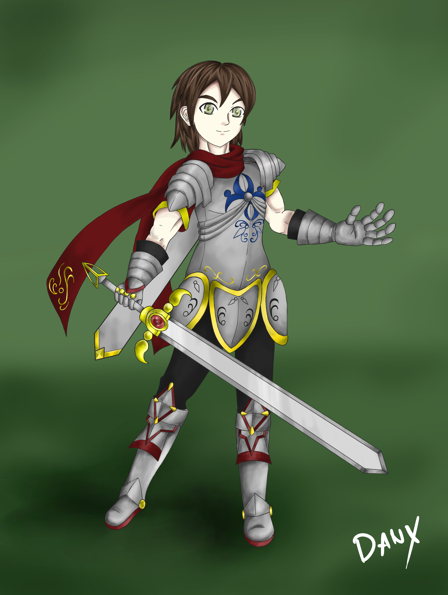
Version 1
Sketch of Herminius in Armour Version 1.
This was going more toward of Ancient Rome Armour.
Finished on: 2016
Version 2
Sketch of Herminius in Armour Version 2.
I made him wider on the torsou and made his sleeves shorter.
The sword and scarf is also wider and longer.
Finished on: 2016
Version 3
Final version of the Sketch for Herminius.
This armour style was more like a the Gothic Era of Armour.
Finished on: 2016
Training Uniform
Herminius in his training outfit. It is also his default outfit.
Like Merlinus's Training Outfit, his outfit is only avalible outside of Hestia.
Finished on: 2016
Database - Training Uniform
Herminius in his training outfit. It is also his default outfit.
Giving a database in all angles.
Finished on: 2016
School Uniform
Herminius in his School Unifrom. His design is differnet from Merlinus.
This is because he is in a differnet grade from Merlinus.
This outfit is inspired by Chinese Robes and Japanese Kimono.
Finished on: 2016
Training Outfit Character Sheet
Herminius in his school uniform.
Giving a database in all angles.
Finished on: 2018
Ulfa Rue
Ulfa Rue is born in another Country with his brother Herminius. Their family were killed by raiders who sell
people for slavery. She was one-years-old at that time. Unlike her brother, she was too young to understand
the situation. Her brother fought for survival for himself and for her. One harsh blizzard day, her brother was
struggling to move while making sure his sister is warm. Her brother faints. Ulfa tries to wake him up.
When he didn't wake up, she starts crying. Another man came in to rescue both of them and lead them to a army base.
When she was four-years-old another person came to his life to be a part of his family. He introduced himself as
Merlinus Daimhin. Herminius and his sister were carefree people. They show him around the house, share toys, books, and
comics. All of them went to the same school in the Adelaide Empire.
Current Version
Ulfa in the Adelaidian Armour. She is working for Empress Elizebeth.
Ulfa's design is inspired of a Soccer Spirits Character, Little Ravian.
She is also the last main character to be develope.
Finished on: August 31, 2018
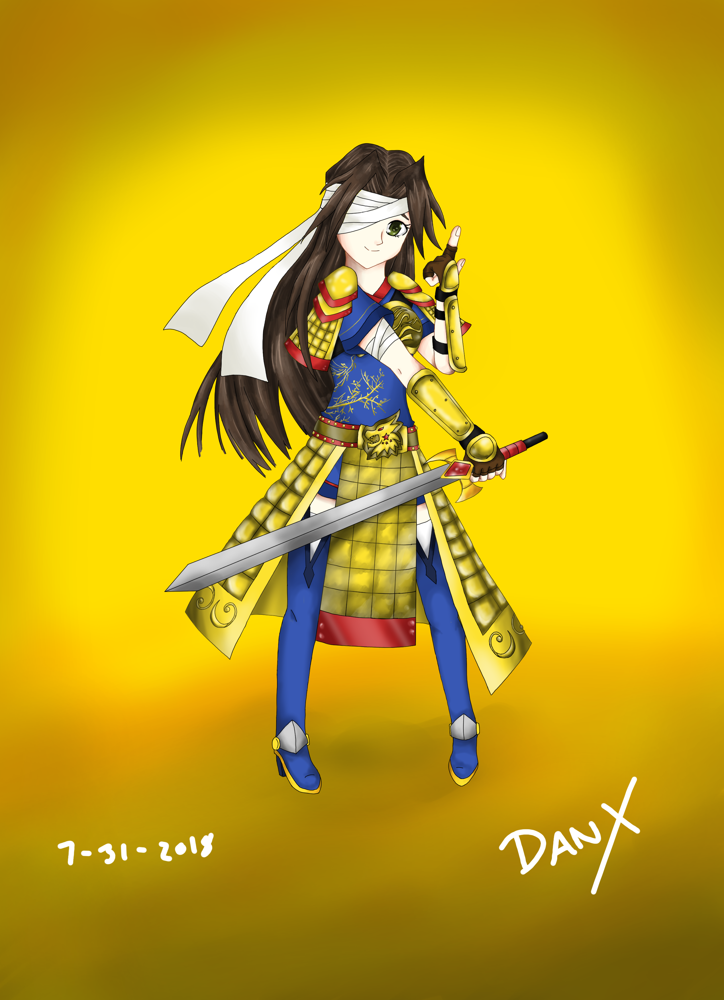
Version 1
Sketch of Ulfa in a Hotaru Armour.
Originally, she would have an armour that her father, Althelbeorn world give her. Giving more like Joan de Arc style.
But, the idea was never explored and became more like this.
Finished on: 2016
Version 2
Sketch of Ulfa in a Hotaru Armour.
This is the final sketch of her.
The Adelaidan Armour is based on Ancient Chinese and Japanese Armour.
The bandage is still covering her right eye because she was shot by an arrow. Similar to "Xiahou Dun" in
"The Romance of Three Kingdoms" or any of the "Dynasty Warrior Series".
Finished on: 2018
Kid Ulfa Rue - Version 1
First Sketch of Ulfa as a kid.
Unlike the rest of my main characters, the kid version of Ulfa was made first before her teen version.
Finished on: 2017
Kid Ulfa Rue - Version 1 Character Sheet
Sketch of Ulfa in her default outfit.
Her outfit is more towards like a
Database of Ulfa in all of the angles.
Finished on: 2018
Kid Ulfa Rue School Uniform
Sketch of Ulfa in her School Uniform
This outfit is inspired by Chinese Robes and Japanese Kimono.
Finished on: 2016
Kid Ulfa Rue Training - Character Sheet
The character sheet of Ulfa's Training Clothes.
Database of Ulfa in all of the angles.
Finished on: 2018
Hotaru Empire Characters
Attila Cruella
He was the emperor of the Hotaru Empire during Amelia's Child days. He could care less about his children.
He had children to make sure the Citizens of Hotaru will have a replacement when he retires. Amelia was believed
to be the savior of the Hotaru Empire. He is manipulate to his daughter, Amelia.
He makes sure that Amelia is poorly educated, and made sure she never leaves the Empire remaining sheltered for the
rest of her life.
In the New Ruler and the Fall, he is a retired man, but tells Amelia the decision; he made sure
the citizens believe that he is no longer running the Empire. Behind the scenes, he is the one making all the decision.
So he can still run the Empire. The only decision he did not make is Amelia decision to attack Rularia. Possibly killing
everyone.
Current Version
This a current sketch of Attila.
He is based on Chinese Empress Wu Zetian.
In terms of design, he is modeled after his chldren Amelia and Merlinus (or Emil).
His name Attila came from "Attila the Hun" and Cruella is a female name of "Cruel".
Finished on: 2016
Persephone Cruella
Persephone is the wife of Atilla. Unlike Atilla, she slightly cares for Amelia for her well education, but still
could care less about her own daughter. She always complain if the raiders would to kidnap their daughter instead
of her own son.
Before A New Ruler and the Fall, Persephone died mysteriously. Her body was later used for autopsy. The autopsy
report said that she died of a chemical that is found in the flowers of this castle. The Red Wolfbane.
Current Version
Sketch of Persephone Cruella.
She is not model after anyone. She is meant to look like an old Amelia in her 40s.
The name Persephone is named after the Greek Goddess of Vegetation and wife to Hades, Ruler of the Underworld.
Finished on: 2016
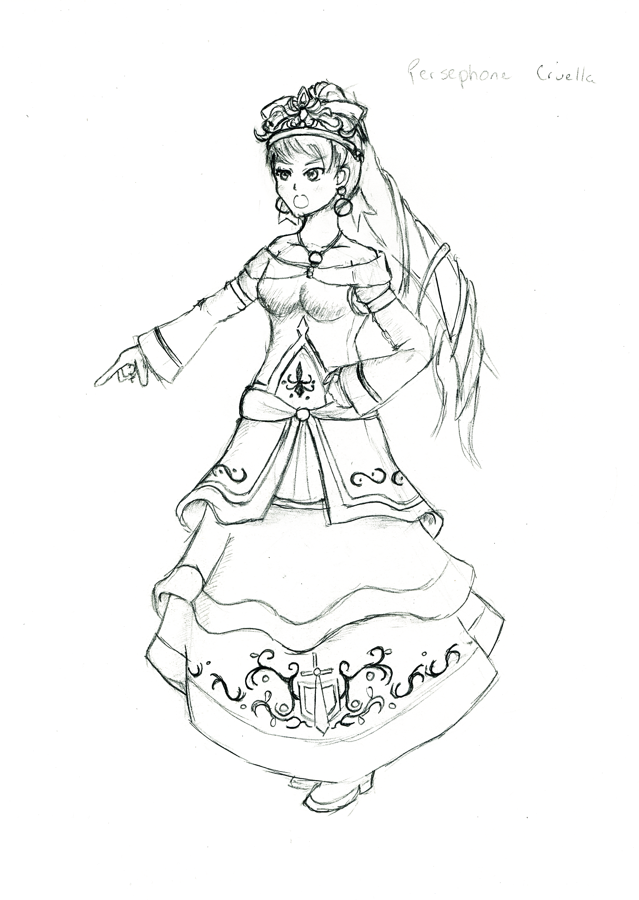
Cindra Kynthos
She is Atilla's Right hand man and the commander of the army. Legends says that she is known as "The Bloody Firefly"
cause of her beauty and skills. She killed over thousands of people is her life. She is just as ruthless as Atilla and
just and cruel as Atilla.
Cindra despise Amelia and Emil just because they are Atilla's children.
She also despise Persephone becasue she is married to Atilla. Romers says that she is the one
who poisoned Persephone. Only because she wants to be the only person with Atilla.
Current Version
This is the final sketch of her.
She is based on a Tarot Card "Chariot".
She was inspired by Tana from "Fire Emblem: Sacrad Stone".
Finished on: 2016
Version 1
This is the first sketch of her.
She is based on a Tarot Card "Chariot".
Finished on: 2016
Harmonia Aiko
Harmonia Aiko is the head maid of the Hotaru Castle. She loves taking care of kids and treats them as her
own. Despite the face that these kids are not her own. She is the only person who understand Amelia and Emil.
Current Version
This is the final sketch of her.
She is modeled after Ellen Baker in "New Horizon".
Finished on: 2016
Version 1
This is the first sketch of her.
This version is to show a differnt pose of Aiko. This pose isn't as satifying as the current one because it
do not really convey her as a character in my mind.
Finished on: 2016
Daisy Lily
Daisy Lily is a maid in the Hotaru Empire. She is also Mallory Romilda's younger sister.
She is happy-go-lucky person. She is also very cheerful, and very kind person. However, other maids (except for
Harmonia Aiko) used her kindness for their own gains. Like prosetution, and extra work.
Current Version
Sketch of Daisy Lily.
She was inspired by LeBlanc from "Hyper Dimension Neptunia".
The outfit she wear is a Adeladian Maid Outfit. She only wears it because she thought the outfit is cute.
The outfit is inspired by Chinese Robe and Japanese Kimono.
Finished on: 2016
Atalante
Atalante is the direct descendant of Goddess Hasial. She is the leader of the Hotaru Religion Community with her
two assistance, Cosmo and Cosmina Annar. She is the one running the whole thing. However, she does not run the
religion in 390s ADE. Before, it was run by Joan Jones and Jove Aaritz. She was the overseer of the whole thing.
She also is the creator of the Hasial manuscripts. Which is the golden rules to not be punished by the
Goddess Hasial herself.
Hotaru Armour
Sketch of Atalante in the Hotaru Armour.
She is based of a tarot card "Temperance".
Her armour is based on Roman Empire.
Finished on: 2018
Basilean Armour
Sketch of Atalante in the Basilean Armour.
This armour is based on Flynn Scifoi in "Tales of Vesperia".
Finished on: 2017
Cosmo Annar
Cosmo is one of Atlante's assistance. He has a twin sister name Cosmina. He often take
pranks into a whole different level. Level that ended up in Violence. He is also
a direct descendant of Goddess Hasial.
Hasial Hotaru Robe
Sketch of Cosmo in the Hotaru Robe.
He and his sister, Cosmina, is based of a tarot card "The World".
Finished on: 2017
Hasial Basilean Robe
Sketch of Cosmo in the Basilean Robe.
Finished on: 2017
Hasial Adelaide Robe
Sketch of Cosmo in the Adelaide Robe.
Finished on: 2017
Cosmina Annar
Cosmina is one of Atlante's assistance. She has a twin brother name Cosmo. Unlike
her brother, she is more vicious than her brother. She would do pranks with her brother.
She is also a direct descendant of Hasial.
Hasial Hotaru Robe
Sketch of Cosmina in the Hotaru Robe.
She and her brother, Cosmo, is based of a tarot card "The World".
Finished on: 2017
Hasial Basilean Robe
Sketch of Cosmina in the Basilean Robe.
Finished on: 2017
Hasial Adelaide Robe
Sketch of Cosmo in the Basilean Robe.
Finished on: 2017
Lanka Sage
Lanka Sage was a previous Emperor before Atilla. During his time as Emperor, he expanded the land of Hotaru.
The citizens of Hotaru sees him as a hero. He is the one who also made a peace contract with the Adelaide and
the Basileus Kingdom that if this Empire were to break the peace, the Adelaide and the Basileus Kingdom would have
the right to attack his own kingdom he built.
At that time, Atilla was his own son. Atilla would later poison him. Lanka ended up in a coma.
He would later wake up from his coma 30 year.
He would wake up from his coma as a blind man with white hair and age. He would be later known by his
own people as "The Blind Strategist".
When he learned that the enemy were the Basileus Kingdom and Adelaide Empire attacking the Hotaru Empire. He goes
after Emperor Atilla with his companion Kendra. He asked him, what he did to his Empire.
Both of them would later on lose the fight against Atilla and die.
Current Version
Sketch of Lanka Sage
He is based on a Tarot Card "Hermit".
He modeled after "Augustus, the First Roman Emperor".
Finished on: 2018
Joan Jones
Joan Jones is "claimed" the prophecy of Hasial. She is a manipulative person who could fool her own cult following.
Along with her boyfriend, Jove Aaritz. Her first and only appearance is in A New Ruler and the Fall.
At first, she has a power to "revive" someone. Her boyfriend posed as the Martyr and then brought back to life. She asked
Queen Amelia if it is okay to move the cult to make a new town known as Jovetown. Amelia says it is okay. Without knowing
any information of anything that is going on.
Joan and Jove have the cult do all the labor. Like building houses, farming, and educated the young. While Jove and Joan
are the ones doing a lot of overseeing. They do got a messenger to travel back and forth. He would be Merlinus Dainhim walking
with Queen Amelia.
Unfortunately, Merlinus told one of the Councils of Court Kendra Judas, Merlinus's Teacher, that they are going to
tell the people that the media would hear about this. Joan and Jove were planning to have a mass suicide.
Once the media hears about, Jove and Joan have their own cult to force suicide by drinking "water". This water is tainted
with Red Wolfsbane Poison, causing people to die in about 30 seconds.
Merlinus and the rescue team were ambushed. Only two people lived. Merlius and Kendra. Amelia was not with Merlinus at the time.
Joan and Jove died of stabbing each other at the head. They couldn't do the same thing like the rest of the people.
Current Version
Final Sketch of Joan Jones.
She is based on a Tarot Card "High Priestess".
Her personality is based on "Jim Jones" and the "Jonestown Massacure".
Finished on: 2018
Version 1
First Sketch of Joan Jones.
Compare from this one to the current, she has less hair, shorter, and a change of style of the staff.
Finished on: 2018
Jove Aaritz
Jove Aaritz (before the Massacure) is well known in his own group as the "False Martyr" because he would often fake his
death just to have donations.
His story is similar to his girlfriend, Joan.
Current Version
Current sketch of Jove Aaritz. Planning to remodel him.
Jove is based on a Tarot Card "Hirophant".
He also has the control over people. Similar to Jim Jones.
Finished on: 2018
Thana Omisha
Thana Omisha is well known as the "The Executioner Reaper". Not many people know that she has a split personality.
One side is a nice, kind, innocent girl who loves everyone. The other personality is a ruthless sociopath killer. She
is also a sadist.
Current Version
Sketch of Thana Omisha.
Thana Omisha is based on a Tarot Card "Death".
She is the only character who was hired by Amelia herself at the age 10.
Finished on: 2018
Stella
Stella is a nice girl. She love helping out other people and defend the innocents.
However, as the story goes on, she becomes more depressed due to how the Empire is running.
She fights for peace in the Hotaru Empire believing that there is still hope due to Amelia being young and not
follow her father's footsteps.
Current Version
Sketch of Stella.
Thana Omisha is based on a Tarot Card "Star".
Finished on: 2018
Fortenza
Fortenza is a mysterious person who only see revenge on one person only. His name is Dan Daniel Gabriel. He is known
as "The Final Judgement". What other people do not know that he as a daughter who he completely abandoned.
Fortenza is her code name. Her real name is Lyssa Strength.
She is a very quiet person. She prefers not to talk to anyone except for Merlinus Daimhin, Herminius and Ulfa Rue.
It is becasue, she does not care for anyone in the Hotaru Empire.
Current Version
Sketch of Fortenza.
She is based on a Tarot Card "Strength".
She is also based on "Nemesis Sudo" as "GUMI (Megpoid)" in the song "The Muzzle of Nemesis" by Akuno Mothy_P.
Finished on: 2018
Metis Lumalia
Metis was once the commander of the Basileus Kingdom. However, she does not agree with Arthur's point-of-views. She
left the army and becomes a defectant of the Basileus Kingdom by joining the Hotaru Empire, their enemy.
Hotaru Armour
Metis in the Hotaru Armour
She is based on a Tarot Card "Moon".
Her design is based on Ancient Greek Hair Style. This desicion is intentional because Metis is well known as "Goddess of Wisdom".
Metis is named after a Jupiter's Moon.
Finished on: 2018
Basileus Armour
Metis in the Basilean Armour
She wears this armour before she defected from Basileus Kingdom.
Finished on: 2018
Lydia Bliss
Lydia is also one of the defectants of the Basileus Kingdom. For the same reason as Metis.
Unknown to Metis. Lydia is deeply in love with Metis. Cause it bring happiness and joy.
Should Lydia be away from Metis, she becomes a nutty. Always talking about there is no light.
No future without Metis.
Current Version
Lydia in Basilean Armour
She is based on a Tarot Card "Sun".
Her design is based on Ancient Greek Hair Style.
Finished on: 2018
Adelaide Empire Characters
Kendra Judas
Kendra Judas runs a training school in swords, spears, axe, bow and arrow, and unarmed. He trains
Merlinus Daimhin, Herminius and Ulfa Rue. He always sees those three as his top students. He does shouts
just to add dramatic effects. He always tell them not to take it personal. He just wants to see them improve.
He also has a large amounts of knowledge because he has been around the world with his friend Althelbeorn Kaigai Ryokou.
He is also married witha a wife and four children. Two older daughters, one son, and one younger daughter.
The younger daughter is the youngest one in the family. He is also good friends with the Althelbeorn Kaigai Ryokou and his family.
Current Version
Sketch Kendra Judas.
Kendra is based on a Tarot Card "The Hanged Man".
He is modeled after a 16 Michelin Stars Chef, Gordon Ramsay.
Finished on: March 5, 2018
Young Kendra
Kendra Judas at the age of 21 years old.
This version is still modeled after Gordon Ramsay. Just in his younger years.
Finished on: April 2018
Althelbeorn Kaigai Ryokou
Althelbeorn Kaigai Ryokou is a traveling warrior. He has met many people. But not were as close as Althea.
Althelbeorn and Althea were not in love at first site. At first Althea seem to hate each other. Althea hates him
because she could never beat him in a fight. Althelbeorn was always calm in a fight but he's not perfect.
He was with Kendra at the time when they both traveling. They were fighting against an unknown group of people.
They do not stay on one faction for too long. Only one day Kendra decided to split with Althelbeorn because he needs get
stronger as an individual. When Althelbeorn was by himself, he was ambushed by Althea. Fortunatly, he saw it coming due to
the noise Althea makes. Of course, he did not kill her. He always spare her.
Althelbeorn and Althea's Story can be in a sperate book for a prequal.
Current Version
Sketch of Althelbeorn.
The inspiration of his design is base on Ephraim from "Fire Emblem the Sacrad Stone".
Finished on: 2018
Althea Ryokou
Althea Ryokou is a sassy person who still has a grudge for not beating Althelbeorn in anything. But she does
deeply care for him. The reason they adopt children is because Althea cannot make children of her own. Althea
was born with a birth defect that she cannot produce her own children.
Current Version
Sketch of Althea.
The inspiration of her design is base on Karla from "Fire Emblem the Blazing Blade".
The inspiration of her design is also base on Sil'fer from "Phantasy Star Online III - C.A.R.D Revolution".
Finished on: 2017
Maia Ryokou
Maia Ryokou is Althelbeorn's Sister. The age different is a huge gap. While Althelbeorn is 38 years old. Maia is
only 18 years old. That is 20 years apart. Althelbeorn is well aware of Maia's
apearance. She is only living with Althelberon is because their parents died when Maia just turned 18. Maia would always
mention that their parents would always sent letter to him and also share him a picture of his sister.
Current Version
Sketch of Maia.
The inspiration of her design is base on Eruna Ichinomiya from "Mikagura High School".
Finished on: 2017
Sophia Kyoko
Sophia is the current princess of the Adelaide Empire. She is the most pure person anyone has ever met.
The first time she meets the main character is when she was eight years old in elementary school in Adelaide.
She delevope a crush on Merlinus at a very young age. She is the one who makes the move and talks to him.
When she talks to him, she uncontrollably blushes and speaks one work at a time with 2 second pauses.
During the Rularia Attack, she died of a single well placed stab wound. (Only in A New Ruler and the Fall)
Current Version
This is the final sketch of her. This is also my very first sketch of her
Her design is based on a Chinese Empress with western hair style.
Finished on: June 17, 2016
Elizebeth Kyoko
Elizebeth Kyoko is the current Empress of the Adelaide Empire. She is the symbol of not everyone requires
a man to run an Empire. She perfer royality over everything else.
Current Version
Sketch of Elizebeth elisabeth_kyoko.
This is the final sketch of her.
Finished on: November 2016
Lucy Mayu
Lucy Mayu is Sophia's servant. She is only near him under the orders of Ameila Cruella. When she first met
Merlinus, she want him for only herself. She become from falling in love to deep obsession.
Lucy is the one who killed Sophia and let Merlinus know about it so they can be together.
Merlinus does not want that. So he stabbed Lucy, picked up Sophia's Body and ran off.
Current Version
Lucy Mayu in the Adeladian Maid Outfit.
She is named after two people from two differnt series.
Lucy from "Elfen Lied"
Mayu from "Vocaloid Series"
The reason why is because she is built to be a "Yandere Girl".
Finished on: 2016
Astraea
Astraea was a class bully in Herminius and Ulfa Rue, and Merlinus Daimhin's time as a kid. She had a gang known as
"The Organization". Unlike most gang, this gang ar a group of people who never learned how to love others. She was
a sociopath. She is well aware what she was doing. She learned them from her mother. Her mother was a prostitute and
gets inspired by her. Not only she bully people but kills at least two people with her gang.
She only learned what is right and wrong from Herminius and his brother and sister and sees those three as her main
inspiration. She wants to become them when she gets out of jail.
Teen Version
Sketch of Astraes in Adelaide Armour.
The Adelaidan Armour is based on Ancient Chinese Armour.
Her design is based on Haruhi Suzumiya from "The Melancholy of Haruhi Suzumiya".
Her backstory is based on "Mary Flora Bell".
Finished on: 2018
Kid Version
Astraea as a kid.
The inspirations are the exact same as the one above.
Similar to Ulfa, the kid version was develope first before the teen version.
Finished on: 2018
Kristen Azazel
Kristen Azazel is a serial killer in Hestia. At the age of ten, she was the main caused of a parricide. She was never apprehended.
She had one mother and father, one older brother, two younger sisters, and three of her
sibling's friends. Her family did terrible things to her. This includes: rape, torture,
and prostitution. The main reason was because the mother was jeleous of how Kristen looks pretter than
herself When the military police found out there was a murder, Kristen was out in
the open covered in blood. The police though Kristen was traumatized of the murder. Kristen
was considered not suspicious because they believe a ten year old cannot commit that kind of
murder, so the mystery of the murder remained unsolved. Both the crime and the trial takes
place South East of the Capital of Adelaide. It’s a mid-populated city named, Salben.
Current Version
This is her at the age of 38.
She is named after Kristen Gilbert known as "Angel of Death" and Azazel "the Fallen Angel"
The inspiration of her design is by a character name GUMI (or Megpoid).
Finished on: 2018
Young Kristen
This is her at the age of 21.
This version was the first one develope. Then, I attempt to age her up.
I also did the calling card cause she is so confident of her skills that she leaves it on the crime scene for
every victim she kills; otherword, she gets paid to kill. Similar to a character named "Shelly de Killer" form
"Ace Attorney, Justice for All" and "Ace Attorney, Prosecutor's Path".
Finished on: 2018
Basilean Judge Kristen
This is her as a judge.
The Basilean Outfit is modeled after Ancient Egypt's Outfit. With some moderan twist.
Finished on: 2018
Kingdom of Basileus Characters
Arthur Basileus
Arthur Basileus was a prince of Kingdom of Basileus. His ancestry
goes back to King James Basileus IV in 231 ADE. James Basileus was well known for
conquering a part of Hestia to make the country his. With this he is the one who enforces
rules to make Hestia a better place to live in. These rules become laws, and these laws are things
people warship to make a religion to follow the Omni Goddess of Justice and Peace, Hasial.
When he learned that his parents are the ones abusing the law to harm others, Arthur invades them and killed his own Mother
and Father. He becomes the King of Basileus.
When he becomes a teen, he has a crush on Princess of Adelaide, Sophia Kyoko. He talk with her more. Unlike Merlinus,
he force her to do thing she won't do. Even force marriage. This would be the biggest mistake he did.
Current Version
This is him in a Basilean Robe.
His robe is inspired by Ancient Egypt.
He is inspired by "Kyle Marlon" as "Kaito" in a song "Servant of Evil" and "Handbeat Clocktower" by Akuno Mothy_P.
He does not have blue hair.
Finished on: 2017
Kid Arthur
This is him in as a kid.
On the right, there are two different style of crowns he wear. Have not decided what he should wear.
Finished on: 2017
Teen Arthur
This is him in a Basilean Robe.
His robe is inspired by Ancient Egypt.
The teen version may not have a purpose do to his age.
Finished on: 2017
Armoured Arthur
This is him in Armour.
This is the very first version of Arthur design.
His armour is an inspiration of "Flynn Scifo" from "Tales of Vesperia".
Finished on: 2016
Edgar Basileus
Edgar was the King of the Basileus Kingdom with his wife Reana Basileus. Edgar is the main reason why his kingdom
is in disastor. He always says laws above all. Because of that, they were able to manipulate the laws however they
like.
Eventually, their own son Arthur would rebel against him and his wife. He and his wife would die by their own son.
Current Version
Current Sketch of Edgar.
His outfit is based on Ancient Egypt.
His personality is similar to "Ga'ran" from "Ace Attorney, Spirit of Justice".
Finished on: 2018
Reana Basileus
Reana was the queen of the Basileus Kingdom with her husband Edgar. She is the only person who knows the history
of Kristen Azazel. It's becasue the family that Kristen killed were her brother's family. Because of this,
she blackmails Kristen to become the Judge of Basileus since the previous judge have left.
She would later die by her own son.
Current Version
Sketch of Reana in her Basilean Queen Robe.
She is the only Basilean who has an Asian Like Hairstyle because she does not origiated in Basileus.
She origiated in Adelaide Empire in Salben.
Her personality is similar to "Ga'ran" from "Ace Attorney, Spirit of Justice".
Finished on: 2018
Mallory Romilda
Mallory is Arthur's Right Hand Man. She is serious about peace. She fights for peace. She also has a sister
name, Daisy Lily.
Current Version
Mallory Romilda in Basileus Armour.
The inspiration of Mallory's Design is "White Heart" from "Hyper Dimension Neptunia Series".
Finished on: 2016
Odysseia Meri
Odysseia Meri is a reporter in the Basileus Kingdom and a Crime Writer Author.
Odysseia only shows up in the fourth saga, Regret
Current Version
The inspiration of Odysseia's Design is from Ancient Egypt and Historie from "Hyper Dimension Neptunia Series".
Finished on: 2018
Version 1
This is the very first version of Odyesseia Meri
The only thing that is different is the clothing and hairpin. This was develope before coming to decide that the
Egyptian style clothing was the main clothing design.
Finished on: 2018
Dan Daniel Gabriel
Dan Daniel Gabriel is known as "The Final Judgement" because almost all of his final saying usually ended on
life in prison without any chance of parole or receives death. If the criminals where is prison, they would receives
the wrath of his torture. He has a daughter he abandoned. He never met her nor dose she cares that she even exists.
Current Version
Sketch of Dan Daniel Gabriel.
He design was inspired by ancient Egypt.
He is based on a Tarot Card "Judgement".
He is also model after "Galleria Marlon" as "Kaito" in a song "Judgement of Corruption" by Akuno Mothy_P.
Finished on: 2018
Others Characters
Hasial
Hasial is the Goddess of Judgement. She is the center of her own religion. Her story is that she with other companions
see the way of the light to fight against her own sister Rasial.
Current Version
This is Goddess Hasial.
Her style is similar to "The Holy Mother of Khura'in" in "Ace Attorney, Spirit of Justice".
Finished on: 2017
Beatrice Chayna
Beatrice Chayna is a nun in her own church she made. She was also involve in the Rularia War. In the forth saga,
Regret, she took in a broken heart Amelia Cruella. She does what she can to get her in a healthy state.
What she does not know is that Amelia is using a false alias. She called herself as Emil.
She is also the only person who shows Amelia how hard work pays off.
When she learns that Emil's real name is Amelia Cruella, The Princess of the Hotaru Empire, she become vengeful.
In the port at the beach side, she tried to kill her from behind, but a ghost of Merlinus interupts her atttack just to protect
his own sister. Only Beatrice can see him.
Amelia was spared and was able to live.
Currnet Version
Sketch of Beatrice.
Beatrice is wearing an old style Adeladian Clothing.
This clothing is inspired by LeBlanc's Clothing from "Hyper Dimension Neptunia".
Finished on: 2016
Other Illustration
Garden
This is Amelia and Emil hanging out at the Garden when they where kids.
This design just came into my imagination.
Finished on: August 3, 2016
Going Home
Herminius, Merlinus, and Ulfa walking home as a group.
This was inspired by a song called "Tales of Moonlit Abandonment" by Akuno Mothy_P.
Finished on: 2017
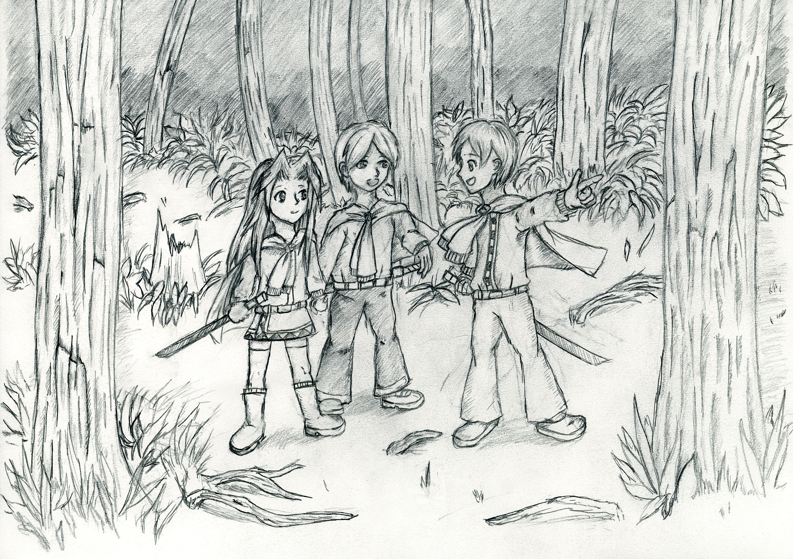
Flying Buttresses
Originally used for the capital of Hotaru.
This was inspired by Gothic Architecture. Most notable on is The Cathedral of Notra Dame.
Finished on: 2016
Door
Originally used for the capital of Hotaru.
This was inspired by Gothic Architecture.
Finished on: 2016
Kamulot
Kamulot is the Capital of The Basileus Kingdom.
This was inspired by Meso American Architecture, The Temple of the Sun.
The layout is based on Athens, Greece.
Finished on: 2018
Title
There are two title sketches.
The top one was more of an Old English Style.
The bottom one was meant to look like a Gothic Manuscripts